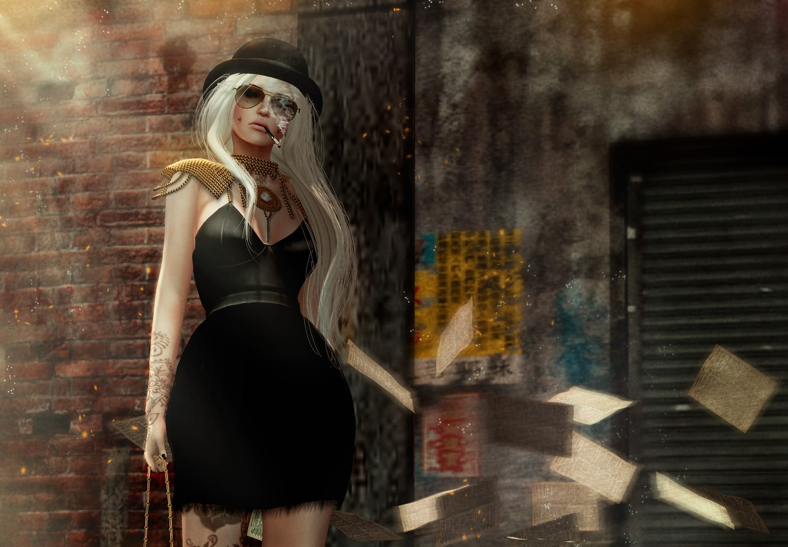

|
Anne likes to work with warm, autumnish colors to give a sense of comfort and peacefullnes.
|
The risky choice of the revealing clothes and dark alley in contrast with the bubblegum and
fierce attitude is one of Anne's signature style.
|

The scattered pages in the dark alley and the short black dress gives a badass look to the
image overall.
|
|
The tattoo, the sundress, the fireflies, it all adds up to the cemetery-like background.
|
Anne loves giving her characters haunting settings, while playing with the colors and the
concepts.
|
The choice of clothing as well as the background play really well in this drawing. Everything
is in tune yet the image overall looks messy.
|
|
Anne loves to play with contrasts the most. In this drawing we have a girl playing a guitar in
a peaceful yet scattered and all over the place setting.
|
A beautiful girl wearing beautiful basic clothes. Aren't we all like this at some point?
|
This digitally drawn girl is something Anne has started working recently and she is in love with the process.
|